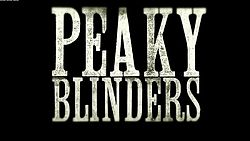
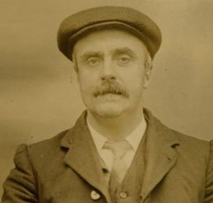
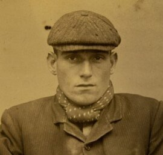
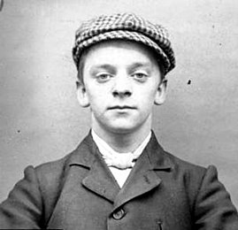
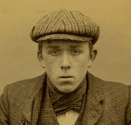

Peaky Blinders - Sangue, Apostas e Navalhas é uma série de televisão britânica de drama criada por Steven Knight. Situado em Birmingham, na Inglaterra, segue as façanhas da gangue criminosa Peaky Blinders logo após a Primeira Guerra Mundial por longas 6 temporadas. A gangue fictícia é vagamente baseada em uma gangue de jovens urbanas reais de mesmo nome que esteve ativa na cidade de 1890 a 1910.

Gangue na vida real
Peaky Blinders foram uma organização criminosa, originalmente de Birmingham, Inglaterra, que operava no território das Midlands Ocidentais, desde o final do século XIX até aos anos 30 do século XX. O grupo possivelmente liderado por Thomas Gilbert, que nasceu das duras privações econômicas da classe trabalhadora britânica, era composto em grande parte por jovens desempregados que rapidamente obtiveram poder social e influência política através de roubos, fraude, contrabando, sequestros e outras atividades ilícitas como a manipulação de apostas de corridas de cavalos. Os membros deste grupo usavam a roupa como forma de identificação, que incluía casacos personalizados e feitos à medida, sobretudos com lapela, coletes abotoados, lenços de seda, calças à boca de sino, botas de couro e boinas pontiagudas com pala. Eram altamente organizados e funcionavam com um sistema de hierarquia próprio.

Thomas Gilbert, membro e possível fundador dos Peaky Blinders

Stephen McNickle, membro dos Peaky Blinders

Harry Fowles, membro dos Peaky Blinders

Ernest Bayles, membro dos Peaky Blinders
Enredo da série
Peaky Blinders são uma organização criminosa de origem cigana que se passa na cidade de Birmingham, Inglaterra, em 1919, formada vários meses após o final da Primeira Guerra Mundial (1914–1918). A história é centrada na ambição do líder da gangue inglesa, Thomas "Tommy" Shelby (Cillian Murphy). A gangue chama a atenção do major irlandês, Chester Campbell (Sam Neill), um inspetor-chefe de polícia do Royal Irish Constabulary (RIC) de Belfast, Irlanda do Norte, enviado por Winston Churchill, sendo contratado para limpar a cidade do Exército Republicano Irlandês (IRA) (1919–1922), comunistas, gangues e criminosos comuns. Churchill ordenou Campbell a eliminar as desordens e rebeliões em Birmingham, visando recuperar um esconderijo roubado de armas que deveria ser enviado para a Líbia Italiana (1934–1943).
Elenco
Cillian Murphy como Thomas "Tommy" Shelby;
Sam Neill como Chester Campbell (1ª e 2ª temporada);
Helen McCrory como Polly (Elizabeth) Gray;
Paul Anderson como Arthur Shelby, Jnr;
Annabelle Wallis como Grace Shelby;
Sophie Rundle como Ada Thorne;
Joe Cole como John Shelby (1ª até a 4ª temporada);
Iddo Goldberg como Freddie Thorne, marido de Ada Shelby;
Charlie Creed-Miles como Billy Kimber (1ª temporada);
Benjamin Zephaniah como Jeremiah;
Andy Nyman (1ª temporada), Richard McCabe (2ª temporada) e Neil Maskell (5ª temporada) como Winston Churchill;
Tommy Flanagan como Arthur Shelby, pai dos irmãos Shelby (1ª temporada);
Tom Hardy como Alfie Solomons (2ª temporada-presente);
Charlotte Riley como May Carleton;
Aimee-Ffion Edwards como Esme Lee, esposa de John Shelby;
Finn Cole como Michael Gray (2ª temporada-presente);
Natasha O'Keeffe como Lizzie Stark, 2ª esposa de Thomas Shelby;
Episódios e temporadas
Temporada
Episódios
Exibições
Audiência (em milhões)
Emissora
1
6
Estreia: 12/09/2013
Último epsódio: 17/10/2013
2.38
BBC Two
2
6
Estreia: 02/10/2014
Último epsódio: 06/11/2014
2.18
3
6
Estreia: 05/05/2016
Último epsódio: 09/06/2016
2.85
4
6
Estreia: 15/11/2017
Último epsódio: 20/12/2017
4.05
5
6
Estreia: 25/08/2019
Último epsódio: 22/09/2019
7.20
BBC One
6
6
Estreia: 27/02/2019
Último epsódio: 03/04/2019
-
Impacto cultural
De acordo com o Office for National Statistics (ONS), Peaky Blinders teve um impacto cultural detectável no Reino Unido. Em 2018, o nome Arthur subiu para o top 10 de nomes masculinos pela primeira vez desde 1920, e Ada saltou para o top 100 feminino pela primeira vez em um século também. A suposição do ONS é que a popularidade desses nomes foi inspirada nos personagens Arthur Shelby Jr. e Ada Thorne.
Em agosto de 2020, um videogame baseado na série de televisão foi desenvolvido pela Curve Digital e lançado para Xbox One, PlayStation 4, Nintendo Switch e para computadores domésticos via Steam. Projetado como um jogo de aventura e quebra-cabeça, ele atua como uma prequela dos eventos da série, ambientados pouco antes da estreia da primeira série, e se concentra na ascensão de Tommy Shelby para se tornar o líder da Família Shelby, enquanto ele tenta frustrar a tentativa de que alguém acabe com a gangue. O jogo recebeu feedback positivo dos críticos por ambientar o cenário e os personagens da série de televisão e adicionar um toque único à resolução de quebra-cabeças.
Produção da série
"Peaky Blinders", criado por Steven Knight e dirigido por Otto Bathurst na primeira temporada, teve seu financiamento garantido pela Screen Yorkshire. As filmagens ocorreram em diversas localidades, incluindo Birmingham, Bradford e Liverpool. Sam Neill, nascido no Ulster, recebeu ajuda de atores da Irlanda do Norte para recuperar seu sotaque. A série enfrentou polêmicas, como a falta de linguistas para orientar o idioma dos ciganos.
A segunda temporada foi gravada imediatamente após a primeira e exibida em 2014. A terceira temporada foi confirmada pouco depois do término da segunda, com as filmagens concluídas em janeiro de 2016. Durante a transmissão da terceira temporada, a BBC renovou a série para as temporadas 4 e 5.
A quarta temporada, lançada em 2017, não incluiu a The Weinstein Company nos créditos. A quinta temporada estreou em 2019 após ter sido encomendada pela BBC em 2016. Rumores sobre a sexta temporada incluíram a possibilidade de Rowan Atkinson interpretar Adolf Hitler, mas os produtores negaram. Em janeiro de 2021, foi anunciado que a sexta temporada seria a última, com a promessa de que a história continuaria de outra forma após a conclusão da série televisiva.